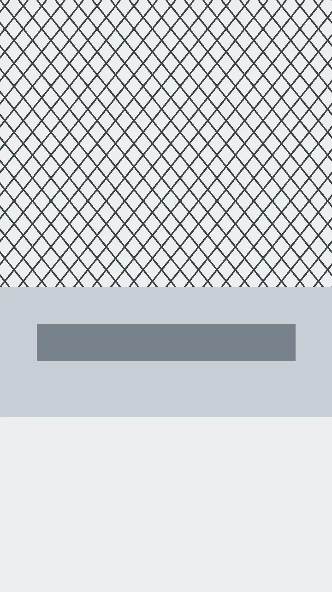

Twin Wonders01 / 02
Two neighbours, one region
Twin Wonders
Gangxia NorthJewel Changi
岗厦北 · 星耀樟宜
01 · Shenzhen 深圳
Gangxia North
岗厦北站
A white lattice spans the hall where four metro lines meet, and a skylight the city calls the Shenzhen Eye draws daylight down to the platforms.
4 lines2 · 10 · 11 · 14
Oct 2022Atrium opened
Shenzhen EyeThe skylight
02 · Singapore 新加坡
Jewel Changi
星耀樟宜
Under a dome of glass and steel, rain falls forty metres through an oculus into a terraced forest, while the airport's people-mover glides past.
40 mRain Vortex
Apr 2019Opened
SafdieArchitects